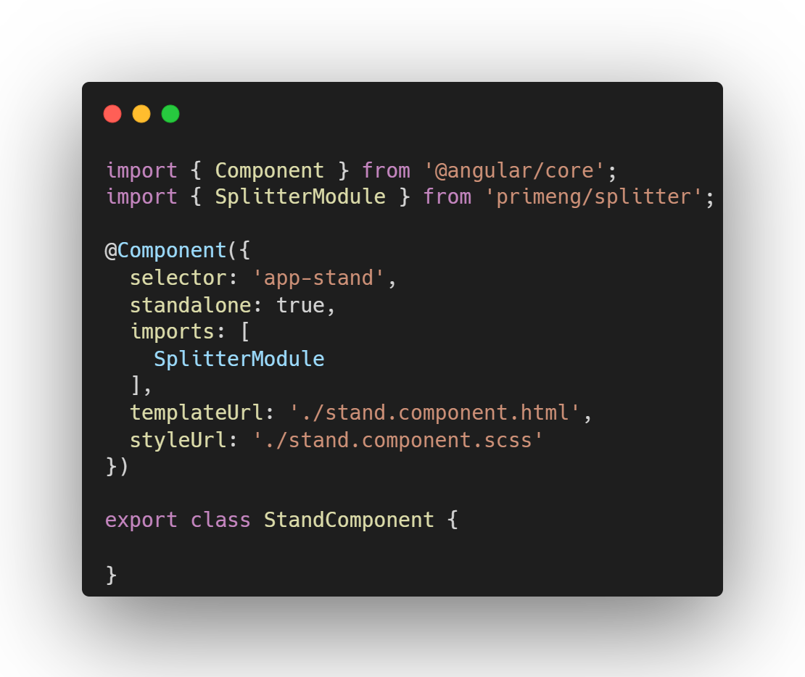

<p-splitter [style]="{ height: 'max-content' }" styleClass="mb-5">
    <ng-template pTemplate>
        <div class="col flex align-items-center justify-content-center flex-column">
            <h1>Standalone Components</h1>
            <ul>
                <li>Default in version 17</li>
                <li>Has enabled standalone in meta "standalone: true"</li>
                <li>Import only what you need</li>
                <li>Can disable the default behavior it, during project setup using "ng new --no-standalone"</li>
            </ul>
           
        </div>
    </ng-template>
    <ng-template pTemplate>
        <div class="col flex align-items-center justify-content-center">
            
        </div>
    </ng-template>
</p-splitter>